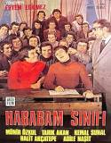

|  |
hababam sınıfıÖzel Çamlıca Lisesi'ne yeni atanan müdür muavini ve tarih öğretmeni olan Mahmut Hoca (Kel Mahmut) kopya çeken, okuldan kaçıp maçlara giden, hocalarla sürekli kafa bulan öğrencilerle dolu okulun 6-A Edebiyat sınıfını, namıdiğer Hababam Sınıfı'nı ilginç ve ağır ceza yöntemleriyle disiplin altına almaya çalışır. |